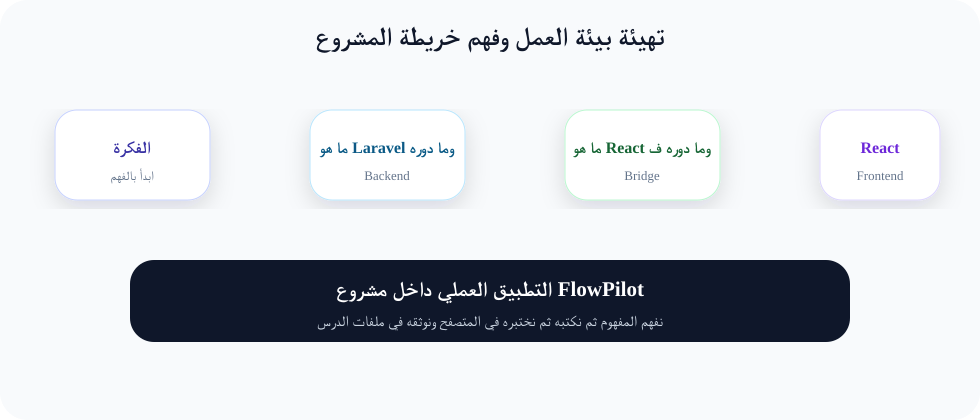

تهيئة بيئة العمل وفهم خريطة المشروع
نثبت الأدوات المطلوبة ونفهم لماذا نستخدم Laravel وReact وInertia معاً قبل كتابة أول كود.

المدة المقترحة
90 إلى 120 دقيقة
المطلوب قبل البدء
قراءة الدرس السابق وتطبيقه
الناتج النهائي
جزء عملي يعمل داخل FlowPilot
1. الفكرة ببساطة
تخيل أن مشروع FlowPilot مثل مكتب إدارة مشاريع. Laravel هو الموظف الذي يحفظ البيانات ويتأكد من الصلاحيات، React هو الواجهة التي يراها المستخدم، وInertia هو المراسل الذكي بينهما. في هذا الدرس سنأخذ مفهوم تهيئة بيئة العمل وفهم خريطة المشروع ونحوّله من فكرة غامضة إلى خطوات واضحة يستطيع المبتدئ تنفيذها بدون خبرة سابقة.
2. لماذا نحتاج هذا الدرس؟
المبتدئ غالباً يضيع لأنه يحفظ أوامر كثيرة بدون أن يعرف مكان استخدامها. لذلك سنربط كل خطوة بسؤال واضح: أين أكتب الكود؟ لماذا أكتبه؟ كيف أتأكد أنه يعمل؟ وماذا أفعل لو ظهر خطأ؟ هذا الأسلوب يجعل التعلم عملياً وآمناً.
3. المفاهيم الأساسية قبل التطبيق
- ما هو Laravel وما دوره في الخلفية Backend: سنشرحه بلغة بسيطة، ثم نراه في ملف حقيقي داخل المشروع.
- ما هو React وما دوره في الواجهة Frontend: سنشرحه بلغة بسيطة، ثم نراه في ملف حقيقي داخل المشروع.
- ما هو Inertia ولماذا يربط الطرفين بدون API منفصل: سنشرحه بلغة بسيطة، ثم نراه في ملف حقيقي داخل المشروع.
- معنى Composer وNode وNPM وVite وGit: سنشرحه بلغة بسيطة، ثم نراه في ملف حقيقي داخل المشروع.
4. التطبيق العملي خطوة بخطوة
- افتح Terminal وتأكد من وجود PHP وComposer وNode
- أنشئ مجلد عمل باسم flowpilot-course
- جهز محرر VS Code وافتح المجلد
- اكتب ملف ملاحظات يشرح دور كل تقنية بجملة واحدة
5. مثال كود مشروح
لا تنسخ الكود فقط. اقرأه كسطر بعد سطر: أولاً افهم اسم الملف، ثم الغرض من السطر، ثم جرّب تعديله تعديلاً صغيراً لترى النتيجة.
php -v composer -V node -v npm -v git --version
6. كيف تعرف أن الدرس نجح؟
- تستطيع شرح الفكرة لشخص آخر بجملتين بسيطتين.
- تعرف الملفات التي عدلتها ولماذا عدلتها.
- تستطيع تشغيل المشروع ورؤية النتيجة في المتصفح.
- لا توجد أخطاء ظاهرة في Terminal أو Console.
7. أخطاء شائعة للمبتدئين
- تشغيل أمر في مجلد خاطئ. تأكد دائماً أنك داخل مجلد المشروع.
- نسيان تشغيل
npm run devعند تعديل ملفات React أو Tailwind. - خلط مسؤوليات Laravel وReact. Laravel للبيانات والقواعد، React للعرض والتفاعل.
- تجاهل رسالة الخطأ. اقرأ أول سطرين من الخطأ غالباً ستجد اسم الملف والسطر.
8. تدريب صغير أثناء الدرس
بعد تطبيق الخطوات، غيّر اسماً أو نصاً أو قيمة بسيطة ثم راقب النتيجة. الهدف أن تشعر أن الكود بين يديك وليس شيئاً تحفظه فقط.
9. الواجب
افتح ملف assignment.md ونفذ المطلوب. لا تنتقل للدرس التالي إلا بعد إنجاز معايير القبول الموجودة في الملف.
10. الكويز
افتح ملف quiz.json وأجب عن الأسئلة. الكويز ليس للحفظ، بل للتأكد أنك فهمت سبب استخدام كل خطوة.